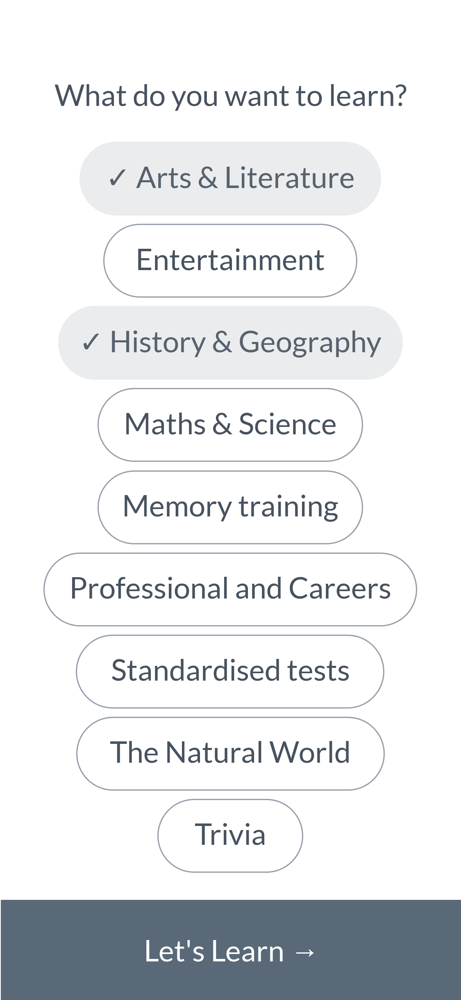
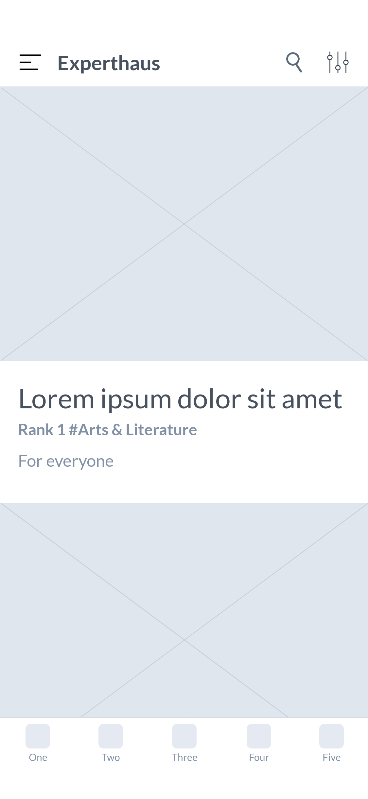
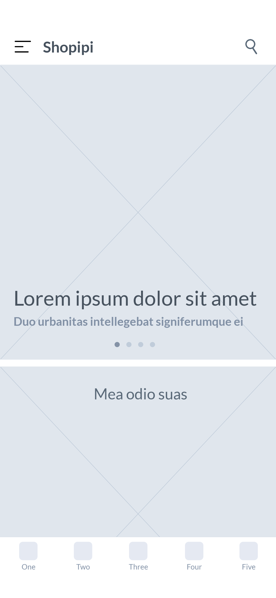

‘Discovery’ 태스크는 사용자가 새로운 콘텐츠를 발견하는 페이지로 쇼핑, 식음료, 뉴스, 여행, 라이프스타일, 뮤직 등 콘텐츠를 제공하는 서비스의 홈 화면으로 사용되며, 사용자 선호도 반영 여부에 따라 아래의 두 가지 유형으로 구분된다.
활용 방법 →서비스 사용 초기에 사용자의 선호를 반영한 콘텐츠 노출을 위해 선호하는 주제나 계정을 선택하는 페이지를 제공하며, 이후 해당 값에 따른 콘텐츠가 노출된다.
 전통적인 상거래 서비스에서는 서비스가 자체적으로 시행하는 프로모션의 콘텐츠 위주로 노출하며, 기존에 구매 이력이 있는 사용자의 경우 일부 영역에 관련한 추천 콘텐츠를 노출하기도 한다.
